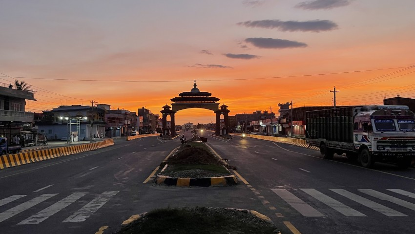
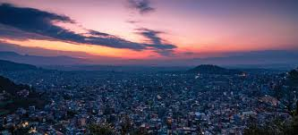
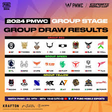

The Past Nepal


- Sports
AB de Villiers, one of cricket's most iconic and innovative batsmen, retired from all forms of the game on November19, 2021. Known as "Mr. 360" for his ability to play shots all around the field, he had earlier retired from international cricket in 2018 but continued to shine in franchise leagues like the IPL. With over 17,000 international runs and countless memorable innings, his retirement marked the end of an era.

- Environment
On July 24, 2025, Bhairahawa experienced extreme heat, recording a scorching
temperature of 42°C, making it the hottest place in Nepal that day.



- International
The PUBG Mobile World Cup (PMWC) 2025 officially began on July 25, 2025, marking the start of one of the biggest global esports tournaments of the year. Held in Riyadh, Saudi Arabia, as part of the Esports World Cup, the event kicked off with the Group Stage.
- Politics